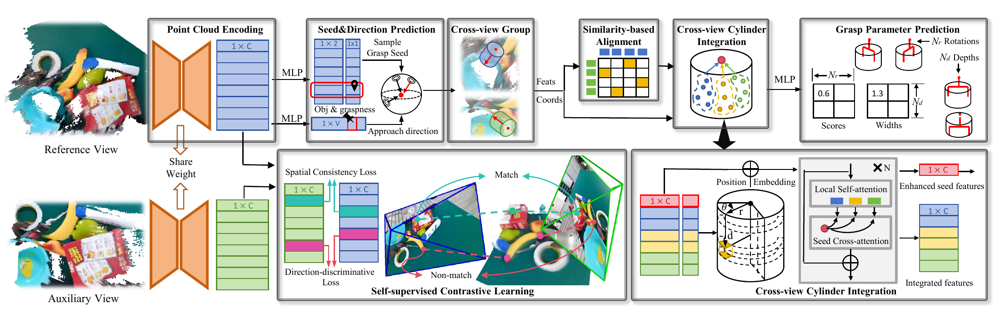
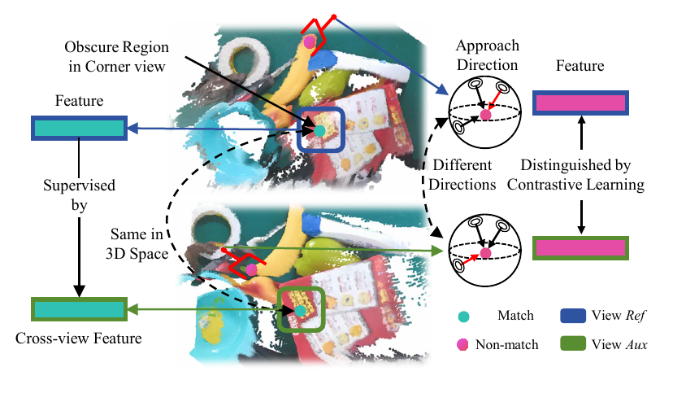
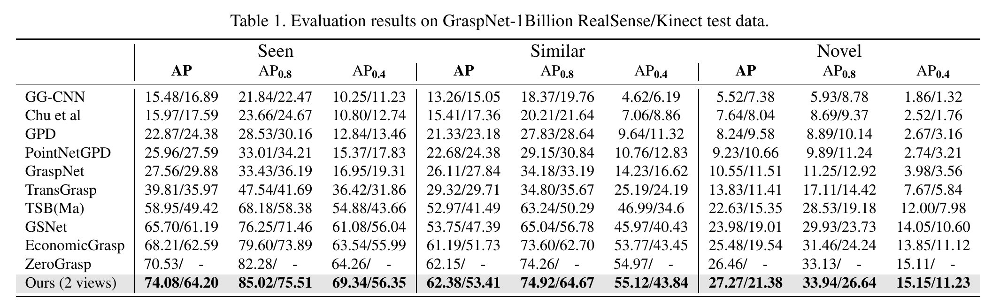

A Cross-view Fusion Framework for Robust 6-DoF Grasp Pose Estimation
CVPR 2026
* Corresponding authors
Abstract
In this paper, we propose a cross-view fusion framework that enhances the robustness of 6-DoF grasp pose estimation in corner views. Our framework alleviates occlusion by incorporating an auxiliary view and avoids the time-consuming, task-agnostic multi-view reconstruction through a post-fusion strategy. To enhance cross-view fusion, we propose a self-supervised contrastive learning strategy that leverages cross-view associations to regularize point cloud features. In brief, a cross-view point pair is considered a match if the two points correspond to the same 3D location, and a non-match if they represent distinct grasp directions. The learning strategy significantly enhances the spatial consistency and direction distinctiveness of point features, thereby facilitating cross-view fusion and improving estimation robustness. Furthermore, we propose a cross-view-aligned cylinder integration module to fuse grasp-relevant geometry into a comprehensive representation. Specifically, the module first aligns the cross-view points and features according to their similarity to enhance the robustness against noise. Subsequently, these points are registered into the cylindrical coordinate frame, emphasizing the rotation-symmetric geometry which is important for grasping. Finally, local self-attention and seed cross-attention layers are alternately employed, respectively enabling interactions within single views and across views, which supports fine-grained representation of grasp-relevant geometry. Our framework achieves strong performance on the GraspNet-1Billion benchmark and in real-world applications.
Method and Results

Self-supervised Contrastive Learning. Cross-view associations improve spatial consistency while distinguishing features with different grasp directions.

GraspNet-1Billion Benchmark Results. Our cross-view framework achieves the best AP across Seen, Similar, and Novel splits on both RealSense and Kinect data.
Video Presentation
Poster

BibTeX
@inproceedings{zhu2026crossview,
title={A Cross-view Fusion Framework for Robust 6-DoF Grasp Pose Estimation},
author={Zhu, Kangjian and Jiang, Haobo and Qian, Jianjun and Xie, Jin},
booktitle={Proceedings of the IEEE/CVF Conference on Computer Vision and Pattern Recognition},
year={2026}
}